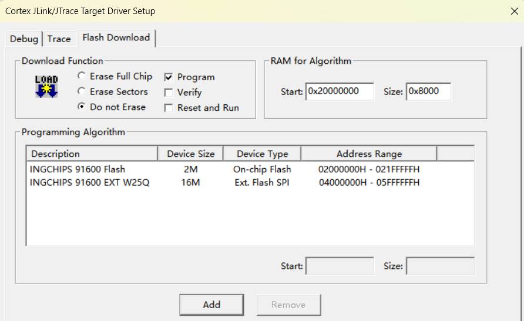
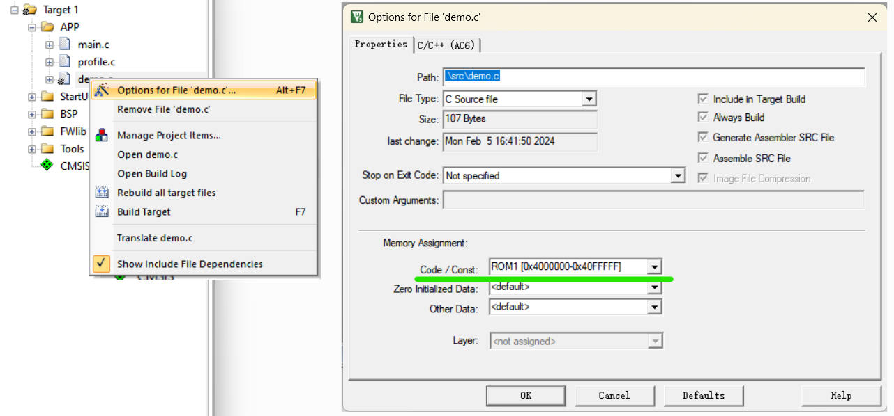

ING916 的 SPI0 通过 AHB 总线连接到处理器，支持 4 线模式，以 存储映射方式只读访问 时支持 XIP。 通过 SPI0 外挂串行 NOR Flash，处理器就可以通过映射方式读取 NOR Flash 里的内容。对于开发者而言， 这块外挂 NOR Flash 可存放程序、只读数据等，可被 Cache “加速”，像内置 Flash 一样，使用方便。
这里 是适用于普冉 SPI NOR Flash 的完整烧写算法项目（Keil）。 设 Keil 安装目录为 C:\Keil_v5，可解压到 C:\Keil_v5\ARM\Flash\ING91600_EXT 目录下直接编译。
0. 芯片选型
SPI0 配置到专门的高速管脚可获得最高的传输速率。建议结合项目需要，确定 ING916 和 NOR Flash 的选型。
1. 开发 Flash 烧写算法
下一步是为 NOR Flash 开发烧写算法。由于烧写算法不便调试，我们可以先在一个“普通”程序里实现相关的函数， 测试正常后再转换为烧写算法。
用程序读写外部 Flash
先用 Wizard 创建一个 ING916 项目，打开 Cube。假设我们决定选用 ING91682C，在 Cube 里把封装切换为 ING91682C， 然后直接点击 “Set to High Speed Pins” 为 SPI0 配置高速管脚：
切换到时钟树界面，确认 SPI0 时钟为 24MHz 慢时钟（注：开发调试阶段先使用较低的时钟频率。），回到 SPI0 的设置页面， 将 Basic Settings 的 “Clock frequency” 设置为 24MHz。
说明：时钟树界面的 SPI0 时钟为 SPI0 硬件模块的驱动；而 Basic Settings 的 “Clock frequency” 为 SPI0 （主模式下） 输出的 CLK 信号的频率，由驱动分频得来。
参考 NOR Flash 数据手册，开发、调试相关的操作函数，如擦除、写入、设置模式等。
以 AHB_QSPI_MEM_BASE 为起始地址可直接以存储映射方式读取 NOR Flash 里的数据。读取时，SPI0 不需要任何特殊设置。
待功能验证正常后，可酌情优化传输速率：提供 SPI0 时钟、设置 NOR Flash 的 4 线模式等。
如果需要以 2 线或者 4 线模式读取 NOR Flash，需要配置 SPI0 的 MemAccessCmd 参数。请参考 NOR Flash 数据手册，
选择合适的命令和时序。MemAccessCmd 默认为 SPI_MEMRD_CMD_03，单线模式。
// 示例：设置为使用 EB 命令（4 线模式）
apSSP_SetMemAccessCmd(AHB_SSP0, SPI_MEMRD_CMD_EB);
将程序转换为 Flash 烧写算法
下一步是通过上面的 NOR Flash 操作函数实现下载工具或者 IDE 要求的 Flash 烧写接口。以 Keil 为例， 需要实现 4 个必备的接口：
- Init: 初始化
- UnInit: 反初始化
- EraseSector: 擦除一个扇区
- ProgramPage: 写入一页
Flash 的特性、地址范围等在 FlashDev.c 的定义，如示例中：
struct FlashDevice const FlashDevice = {
FLASH_DRV_VERS, // Driver Version, do not modify!
"INGCHIPS 91600 EXT Flash", // Device Name
EXTSPI, // Device Type
0x04000000, // Device Start Address (A)
0x00200000, // Device Size in Bytes (B)
4096, // Programming Page Size (C)
0, // Reserved, must be 0
0xFF, // Initial Content of Erased Memory
800, // Program Page Timeout 100 mSec
3000, // Erase Sector Timeout 3000 mSec
// Specify Size and Address of Sectors
0x1000, 0x000000, // Sector Size 4kB (D)
SECTOR_END
};
其中，名称可任意填写；起始地址 A 为固定值（AHB_QSPI_MEM_BASE），不可修改；
B 既可根据实际情况填写，也可以填写一个较大的值，当以后更换容量更大的 Flash 型号时，不需要更改烧写算法；
D 务必根据实际情况填写扇区大小；C 为烧录时一页的大小，这里把它设置为与扇区大小相同。
2. 使用外部 Flash
用 Wizard 创建一个 ING916 项目（假设名为 use_ext_flash）。打开 Cube，切换到所选用的封装，打开 SPI0 的时钟，并为 SPI0 配置管脚。
在 Keil 里打开项目的 Target 设置，添加一块外部 Flash，起始地址为 AHB_QSPI_MEM_BASE：
进入烧写算法设置页面，添加外部 Flash 烧写算法，添加完成后，这个项目存在两个烧写算法：

为项目添加一个新的文件 demo.c，写一个测试函数：
#include "platform_api.h"
void hello_world(void)
{
platform_printf("hello from EXT flash\n");
}
在 set_profile() 里调用这个函数：
extern void hello_world(void);
uint32_t setup_profile(void *data, void *user_data)
{
platform_printf("setup profile\n");
platform_printf("func @ %p\n", hello_world);
hello_world();
//...
}
打开 demo.c 的选项窗口，将 “Code/Const” 指派到 ROM1：

检查项目目录下是否存在 use_ext_flash.bin 文件，如有则删除。编译，此时可发现项目目录下生成了 一个名为 use_ext_flash.bin 的文件夹，里面存放了两个分别对应于 ROM1 和 IROM1 数据的两个文件。 打开下载工具，不勾选 “Burn Bin #2”（注意：下载工具可以下载 ER_IROM1，但无法下载 ER_ROM1。），只下载 platform.bin。回到 Keil，点击 Download (F8) 按钮下载 app。 运行程序，用串口工具可看到如下输出：
setup profile
func @ 04000001
hello from EXT flash
可见 hello_world 函数已被存放于外挂 NOR Flash，使用时与内置 Flash 没有区别。